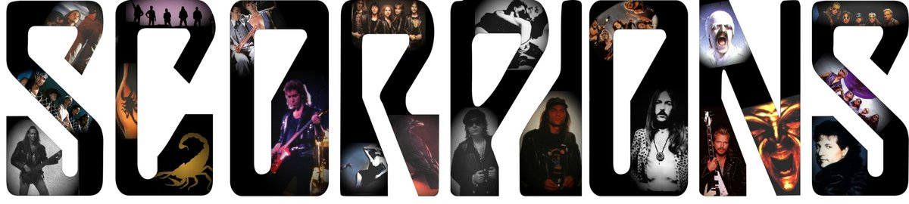
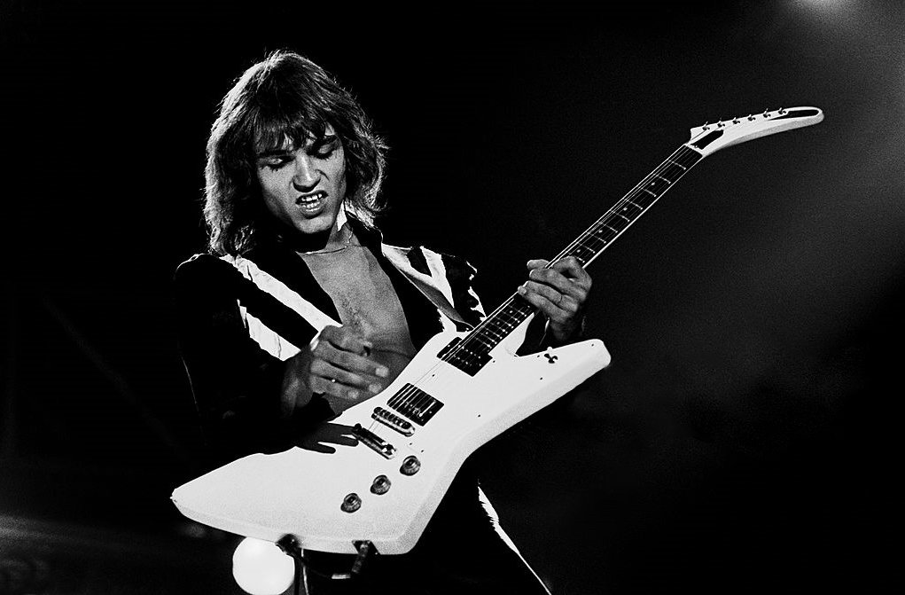
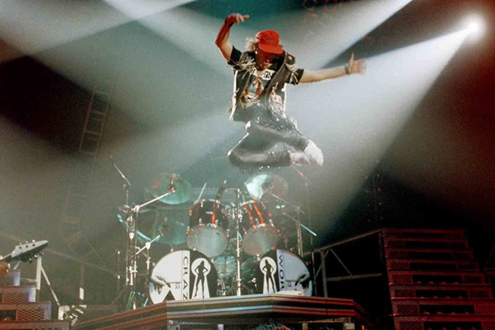

Факты об рок-группе Scorpions |
|---|
|
 Название Scorpions возникло неслучайно. Среди групп в то время были очень распространены имена, обозначающие различных представителей флоры и фауны. Участники коллектива решили последовать этой тенденции, ведь жало скорпиона похоже на иглу проигрывателя, без которой невозможно слушать музыку. Но не только это веяние моды повлияло на название коллектива. Основатель и гитарист "Скорпов" Рудольф Шенкер говорил, что такое слово выбрано затем, чтобы оно читалось и обозначало на всех языках мира одно и тоже, понятное каждому человеку. Плюс ко всему вышесказанному, участники группы говорили: "Как скорпион атакует своим жалом с ядом, так и мы жалим своих слушателей своей музыкой в самое сердце." В 1978 году Scorpions покинул соло-гитарист Ульрих Рот, и группа объявила о начале прослушивания нового кандидата. Оно проходило в Лондоне. Было много претендентов, но интересно то, что из 130 (по другим данным 140) участвующих "Скорпионы" выбрали своего соотечественника из родного Ганновера — Маттиаса Ябса. Они отыграли несколько концертов летом 1978 года. Но Мэтту пришлось отказать, так как в коллектив вернулся их один из первых гитаристов группы, младший брат Рудольфа Шенкера — Майкл, и "Скорпы" решили продолжить работу именно с ним, так как он был более популярен (на тот момент играл в британской группе UFO). Правда, очень скоро пожалели об этом, потому что Майкл Шенкер продемонстрировал себя в ходе тура далеко не с лучшей стороны. Он позволял себе периодически опаздывать, злоупотреблять алкоголем и наркотиками, а однажды просто не явился на концерт. Майкл позвонил Ябсу и предложил ему сыграть в Кёльне вместо него, на что Маттиас получил жёсткий отказ, мол, пусть сам разбирается с тем, что заварил и улетел отдыхать на остров Шпикерог. Участником группы ничего не оставалось сделать как полететь туда на вертолёте и сказать: "Мы не улетим, пока ты не вернёшься в группу". Ябса пришлось долго уговаривать на самом деле, но он в конечном счёте согласился. Маттиас не только не бросил Scorpions в непростой ситуации, но и выучил всю концертную программу за одну ночь, дабы избежать отмены концертов.
В отличие от современных "буйных" групп, Scorpions особо никогда не были замечены в разрушениях на концертах. Поэтому во время выступления не страдали ни аппаратура, ни инструменты, чего не скажешь о различных частях тела. Это было в те далёкие времена, когда "Скорпы" выступали ещё в небольших клубах. Клаус Майне всегда отличался своей подвижностью (как, впрочем, и Шенкер с Ябсом) и однажды стал жертвой своей собственной прыгучести. На одном из кульминационных моментов во время концерта вокалист не рассчитал высоту и подпрыгнул вверх, ударившись головой о потолочную балку. Как это часто бывает, разгорячённая толпа, пришедшая на выступление, подумала, что это часть шоу, но Клаусу было не до шуток: он упал на сцену и так и остался лежать. И только остальные участники коллектива поняли, что произошло что-то неладное. Они спешно унесли фронтмена за кулисы и вызвали службу спасения, так как Майне, как говорят, основательно разбил себе голову. Также была ситуация, когда на вокалиста упал осветительный прибор. Говорят, после этих случаев он и стал носить свой знаменитый головной убор, ну, и плюс ко всему стал терять растительность на голове:)
|